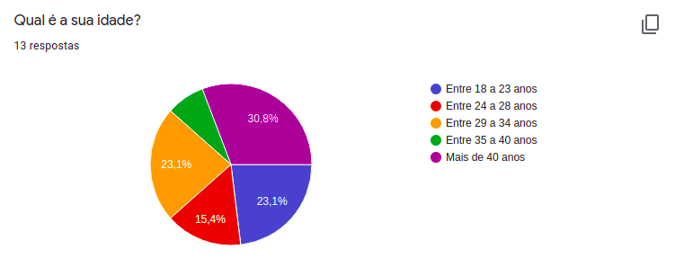
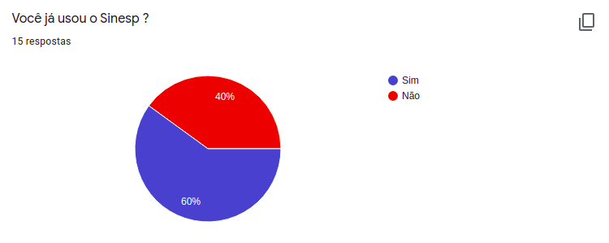
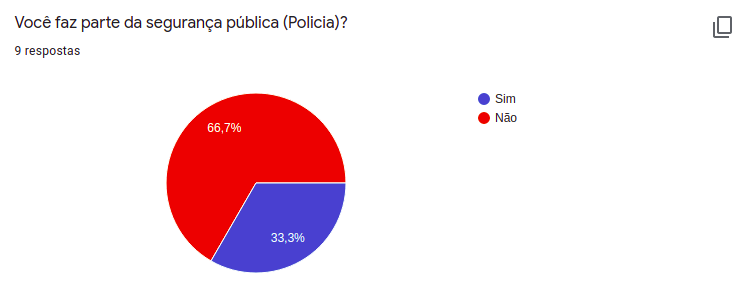
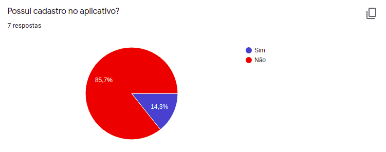
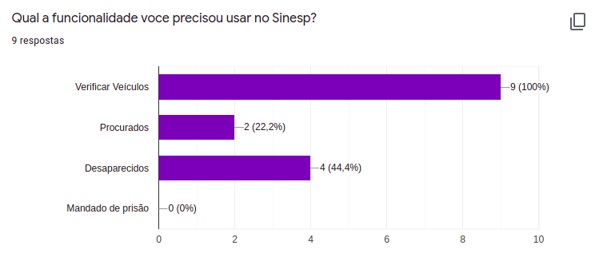
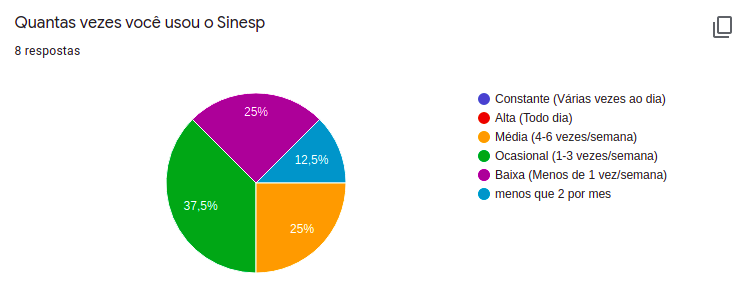

Questionário
Introdução
É uma técnica que tem um alcance muito grande no número de pessoas. Ela é muito utilizada quando há indisponibilidade física, dispersão dos envolvidos ou quando há a necessidade de um levantamento estatístico sob qualquer aspecto envolvendo os interessados. As perguntas são organizadas com o objetivo de levantar dados para uma pesquisa ou estudo, cujas respostas são fornecidas pelo informante sem a orientação direto do pesquisador.
Questões
Questão 1

Questão 2

Questão 3

Questão 4

Questão 5

Questão 6

Questão 7

Conclusão
Com base na quantidade de respostas obtidas com o formulário, não foi possível encontrar uma quantidade grande de usuários do aplicativo Sinesp Cidadão, porém várias propriedades e funcionalidades indicadas por não usuários do aplicativo fazem parte do Sinesp.
Referências
SERRANO, Maurício; SERRANO, Milene; Requisitos – Aula 07
Versionamento
| Data | Versão | Descrição | Autor |
|---|---|---|---|
| 25/11/2020 | 1.0 | Adição da Elicitação restante: Questionário | Fellipe e Itallo |